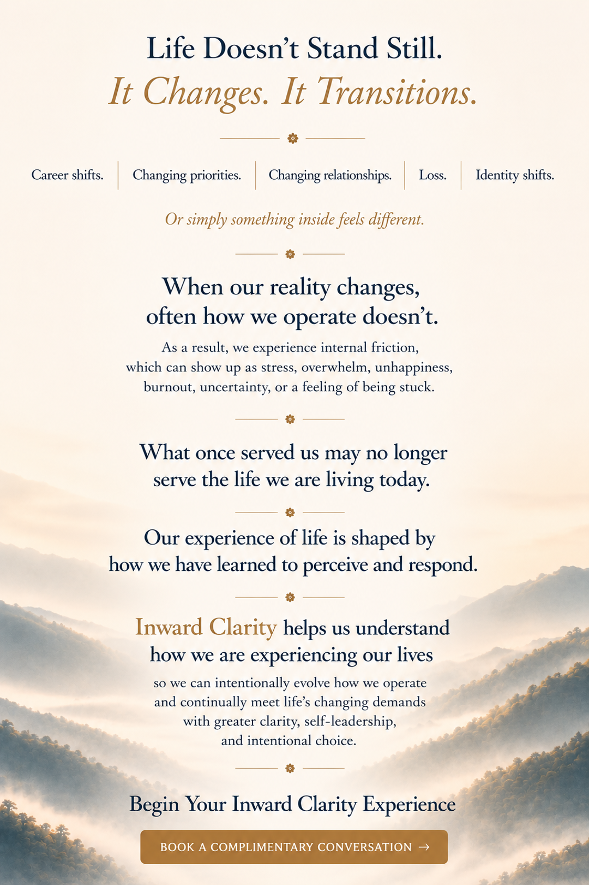

Career shifts.
Changing priorities.
Changing relationships.
Loss.
Identity shifts.
Or simply something inside feels different.
As a result, we experience internal friction,
which can show up as stress, overwhelm, unhappiness,
burnout, uncertainty, or a feeling of being stuck.
which can show up as stress, overwhelm, unhappiness,
burnout, uncertainty, or a feeling of being stuck.
so we can intentionally evolve how we operate
and continually meet life’s changing demands
with greater clarity, self-leadership,
and intentional choice.
and continually meet life’s changing demands
with greater clarity, self-leadership,
and intentional choice.